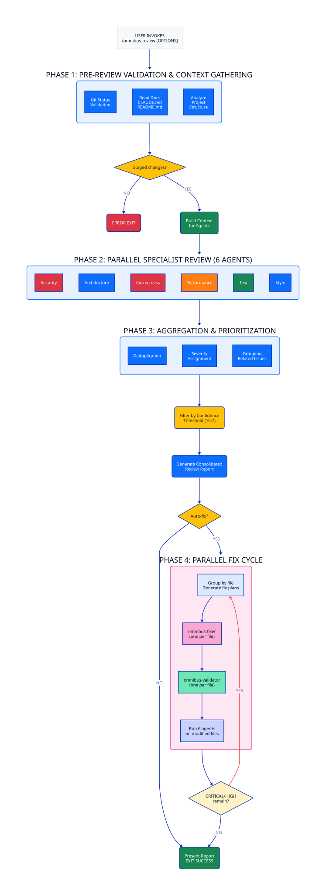

Comprehensive Multi-Agent Code Review System for Claude Code
Omnibus Review is a sophisticated multi-agent code review system that orchestrates nine specialized AI agents to perform deep, comprehensive analysis of codebases. Seven review agents analyze code in parallel, while two fix agents handle automated remediation with validation. Unlike traditional review tools, it employs parallel specialist agents working independently with advanced reasoning capabilities to catch issues that single-pass reviews miss.
Nine specialized agents: seven for review (parallel), two for fixing (fixer + validator per file).
All agents use Claude Opus 4.5 with ultrathink extended thinking for deeper analysis and fewer false positives.
Parallel fixer subagents per file, each validated independently. Complete fixes only - no shortcuts.
Fix agents start fresh with minimal context (file + plan only). No compaction needed during fix loops.

Review all staged changes in the current repository:
Review and automatically fix critical/high severity issues:
Only report critical and high severity issues:
Review only specific files or patterns:
git add before running omnibus-review.
The tool analyzes staged changes to focus on what's actually being committed.
| Option | Description | Default |
|---|---|---|
--fix |
Automatically fix CRITICAL and HIGH severity issues using Ralph Loop | false |
--min-severity |
Minimum severity to report: critical, high, medium, low | low |
--files |
Glob pattern to filter files (e.g., "src/**/*.py") | all staged |
--max-iterations |
Maximum fix iterations in Ralph Loop | 5 |
--confidence |
Minimum confidence threshold (0.0 - 1.0) | 0.7 |
--no-tests |
Skip running tests during fix cycle | false |
All specialist agents use Claude Opus 4.5 for several critical reasons:
Each agent is configured with ultrathink extended thinking mode:
| Agent | Focus Areas | Example Findings |
|---|---|---|
| Security Analyst | Injection flaws, auth bypass, crypto misuse, data exposure | SQL injection, XSS, insecure defaults, credential leaks |
| Architecture Reviewer | Design patterns, separation of concerns, scalability, coupling | God objects, circular dependencies, missing abstractions |
| Correctness Verifier | Logic errors, edge cases, null safety, type correctness | Off-by-one errors, race conditions, unhandled exceptions |
| Performance Auditor | N+1 queries, memory leaks, algorithmic complexity, caching | Missing indexes, inefficient loops, resource exhaustion |
| Test Theatre Detector | Theatre tests: hardcoded, empty, always-pass, over-mocked | Hardcoded assertions, empty test bodies, mocks replacing all logic |
| Test Evaluator | Coverage, test quality, maintainability, test patterns | Missing edge cases, flaky tests, untested error paths |
| Code Style | Readability, naming, documentation, consistency | Unclear names, missing docs, inconsistent formatting |
| Agent | Purpose | Key Behaviors |
|---|---|---|
| Omnibus Fixer | Applies COMPLETE fixes to single file following fix plan | No shortcuts, architecture alignment, divergence documentation |
| Omnibus Validator | Verifies fixes match plan, catches shortcuts and regressions | Completeness check, architecture compliance, new issue detection |
See Agent Overview for detailed responsibilities and examples.
See Severity Guide for detailed classification rules and examples.
When --fix is enabled, omnibus-review uses a parallel subagent architecture
for context isolation and scalability:
omnibus-fixer subagent per file (all run in parallel)omnibus-validator subagent per fixed file (all run in parallel)--fix proceeds automaticallyEach fixer/validator subagent starts with fresh context containing only:
This eliminates context bloat during fix loops - no compaction needed regardless of file count.
Omnibus-review produces a structured report with:
See Output Templates for example reports.
/code-review)git add .--min-severity high first for faster feedbackSee Review Checklist for comprehensive preparation steps.
Solution: Run git add on files you want reviewed, then retry.
Solutions:
--files to limit scope to specific areas--min-severity high for faster initial passSolutions:
--confidence threshold (e.g., 0.8 or 0.85)--min-severity medium to focus on higher-impact issuesCauses:
{kind=link}